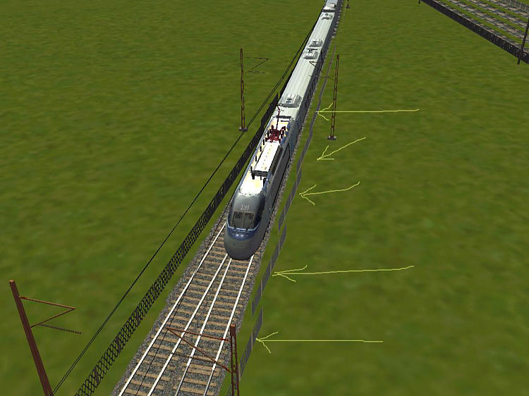
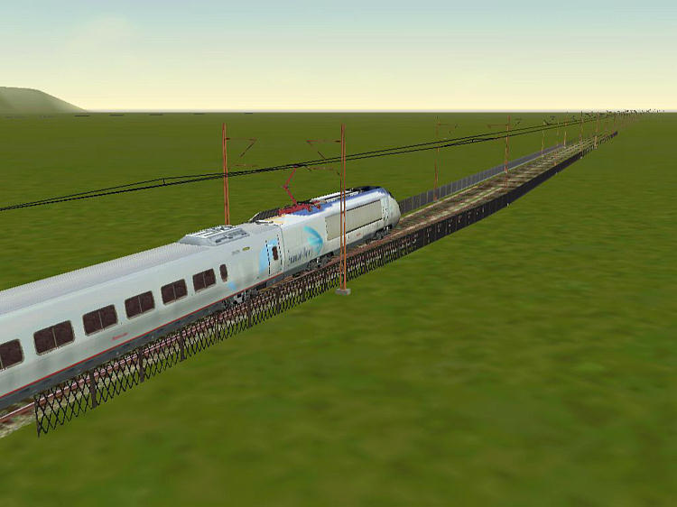
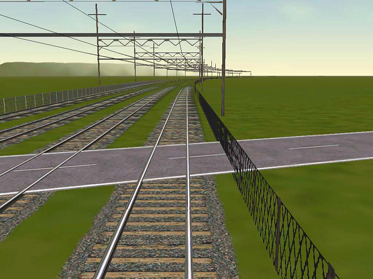

Well, I found a better way. I thought of treating fences as a gantry, and placed the following lines in my gantry.dat file:
GantrySet(
Name ( "ROW Wire Fences" )
Style ( 00000001 )
Separation ( 10 )
GantryTable ( 1
GantryTableEntry (
Filename ( "WireFence10m.s" )
Distance ( 20 )
)
)
)
I set the distance to 20 so that a right-of-way up to 4 tracks wide could be fenced in. The theory was sound, but in practice I ended up with fences across the tracks because the length of the fences is in the x direction.
No problem. I manually edited the shape and .sd files to get the length in the z-axis(this was the hard part because there are normal vectors in there), and renamed the new shape ROW_WireFence10m.s. I then added the following line to my gantry.dat file:
GantrySet(
Name ( "ROW Wire Fences" )
Style ( 00000001 )
Separation ( 10 )
GantryTable ( 1
GantryTableEntry (
Filename ( "ROW_WireFence10m.s" )
Distance ( 20 )
)
)
)
You also need to change the header of the file. The header looks like this:
SIMISA@@@@@@@@@@JINX0g0t______
(
GantrySets ( N
N is the number of gantry sets, and you need to increase it by however many different types of fencing you add or the new entry won't show up in the Route Editor.
When I want to place fences, I just choose autoplace gantries in the RE, and select "ROW Wire Fences" from the drop down box. Here are some results:

The fences where the arrows point to need to be manually selected and rotated(using the numerical keypad is easier). This only needs to be done in places where the route widens or narrows. Here is what it looks like fixed:


This last shot illustrates that you will get fences in some places that need to be manually removed, but it is better to manually remove a few fences rather than to manually place many. To manually delete fences (where they cross roads for example) just select them, hit the delete key, and bingo, they're gone. I've left them in that screenshot to show that the method is not perfect.
RE does most of the work, and then you're just left to tidy up a few loose ends, er fences.
Also, there are occasionally spaces of a few meters between tiles that may need to be manually fenced, but this shouldn't be a big deal. There doesn't appear to be any hit on frame rates, either, even on my PII-450. After all, the shape is only four polygons!
Click here for my altered shape file( ModifiedFenceShape.zip - it uses the same texture as the standard 10 meter wire fence).
You can even make multiple entries in the gantry.dat file for different types of fences. For example, I enlarged the above shape, made it reference a different texture, and added an entry for "ROW Mesh Fence". You can add wood fences, wrought iron, etc. The only key is that the shape must have its length in the z-axis, and should be fairly short so it looks good on curves.
I hope this gives route builders an incentive now to fence routes in for safety's sake.
This technique is very fast, and I was able to fence about 35 miles of the high speed portion of the LGVMed line in about 8 hours using this technique, and some of that was the learning curve to adjust the fences in the places where they needed to be rotated, or raised. Since the fences are placed on the terrain, they will end up under bridges(or even under water), and will need to be manually
removed, and in some cases where the terrain near the track is not even, the height may need to be slightly adjusted. The LGVMed route has a lot of bridges, so I imagine this route will take longer than most. I can't emphasize it enough, but use the numerical keypad, NOT the mouse for adjustments. That way, you can adjust one axis at a time, which makes everything go much faster.
If you're starting a route from scratch, it is probably best to place both gantries and fences before anything else, including placing bridges or adjusting terrain. That way, you simply remove the fences where the bridge will be(or even leave them for a fenced bridge), and they will always be even with the track.
So far I haven't noticed any problems reaching the number of objects per tile limit, but it might be a good idea to have a few fence sets of different lengths in the gantry.dat file so that you can use the longer ones where number of objects might be a problem.